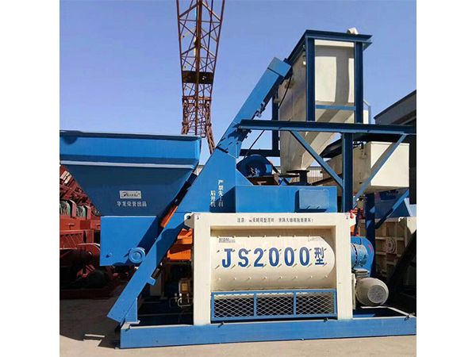

JS2000 forced mixer — core component for HZS120 batching plants and independent mixing operations

JS2000 twin-shaft forced concrete mixer
JS2000 twin-shaft forced mixer delivering 2000L per batch. The power unit behind the HZS120 batching plant. Heavy-duty construction for demanding infrastructure projects.
| Model | JS2000 |
| Brand | YudaHualong (YudaHualong Concrete) |
| Type | Twin-Shaft Forced Mixer |
| Rated Feeding Capacity | 3200L |
| Rated Discharging Capacity | 2000L |
| Mixer Power | 45KW x 2 |
| Production Cycle | 40sec |
Twin-shaft forced mixing principle ensures fast and uniform concrete mixing. High-efficiency copper-wound mixing motor improves production efficiency.
Mixing drum and blades are made of high-strength wear-resistant materials, extending service life and reducing maintenance costs while ensuring concrete quality and stability.
Advanced electronic and sensor technology enables intelligent control and precise monitoring of equipment. Real-time monitoring and adjustment of operating parameters optimizes production process.
Low noise and low energy consumption equipment and processes reduce environmental impact.